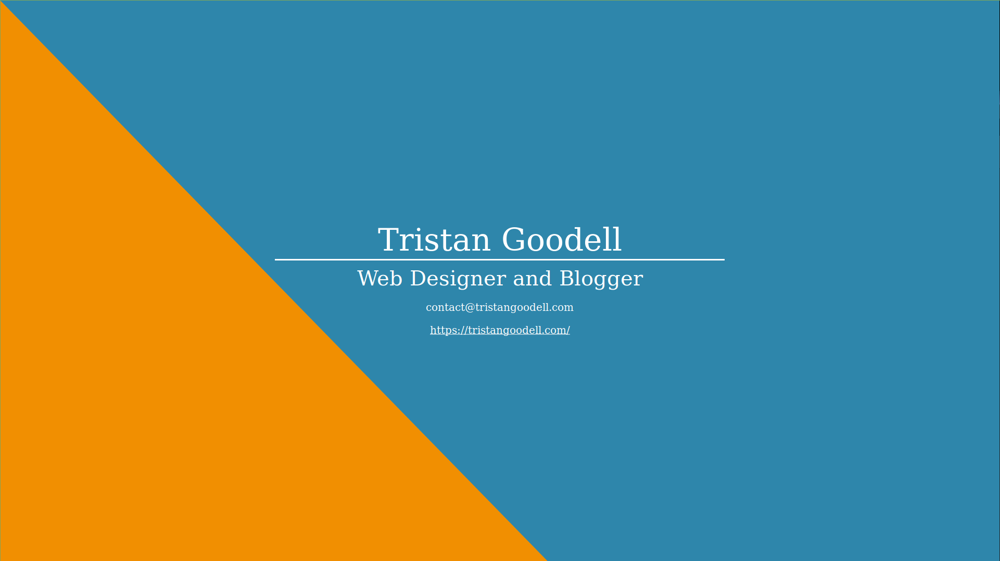

Prior to purchasing tristangoodell.com, I enrolled in the Github Student Developer Pack program. There are some excellent benefits in the pack including credit to several hosting options, unlimited private repositories while a student at Github, and a free .me domain with Namecheap for a full year.
If you are a student with an email that ends with '.edu', I highly recommend that you apply. I am using the $50 Digital Ocean credit for hosting on https://tristangoodell.com for the first 10 months and there are lots of other really useful benefits that you receive.
Anyway, I chose to register https://tgoodell.me as a sort of testing domain for various simple webpages. I built a decent looking website, although I wasn't too happy about it.
I decided to pivot away from the more experimental side of things and instead build a "Business Card Website". I do not know if I was the first to come up with this idea (I doubt it), but I think that it may be useful to some people.
The idea here is that this is a business card that 'you always carry'. This ensures that even if you forget your business cards at home, you have a way for a potential client or connection to easily find your contact information and learn a little bit more about you.
We all know what a typical business card looks like. The challenge is transforming that into a usable webpage and retaining all of the necessary information that a typical business card would have.
Prior to actually building the website, I gathered a list of what I wanted on this website. This included:
For tgoodell.me, I wanted this information to be about me since the domain does have my name in it. Of course, there is information that does not apply to me such as my job title, but, overall I included all of the information that I deemed necessary.
I am fairly pleased with the finished product; it is not perfect, but it is what I envisioned. It is viewable on mobile, which is a plus.
Final Result:

And you can view it live at tgoodell.me.
While I am pleased at how this turned out, I may end up making a few changes:
Of course, these may very well be fixed by the time you read this.
Next week, I hope to be finished with https://appin.space. The intention is to create a mock app showcase site similar to what Mozilla Firefox has done.
If you are interested in having a website similar to https://tgoodell.me or have a vision of your own website, feel free to get in touch and learn more here.
Thanks for reading! Next post should be up next Friday/Saturday!